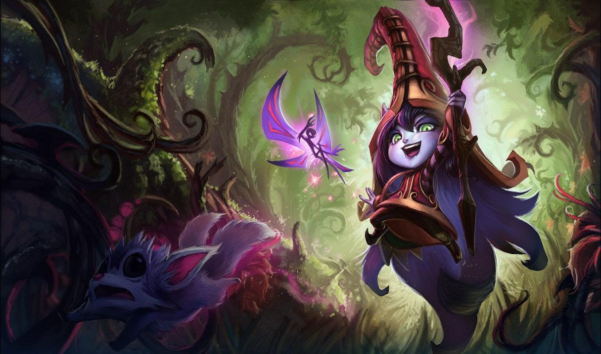

Support is a role who's whole job is to help the bot laner first, and the rest of the team second. The support is also not expected to play to a single lane, they can leave constantly. Supports normally have abilities that can stun enemies, push enemies away, pull enemies in, give healing to your team, give sheilding to your team, give buffs to your team and so on. Some supports are very defensive and hard to kill, others are easy to kill. Some are ranged, and some are melee. As long as a character can help the other memebers of their team, they can be a support.
Nautilus (above) and Lulu (below) are two example of supports. Nautilus is very defensive with lots of stuns and Lulu is much less defensive but longer range with healing and shielding
To see a list of all Supports, click Here